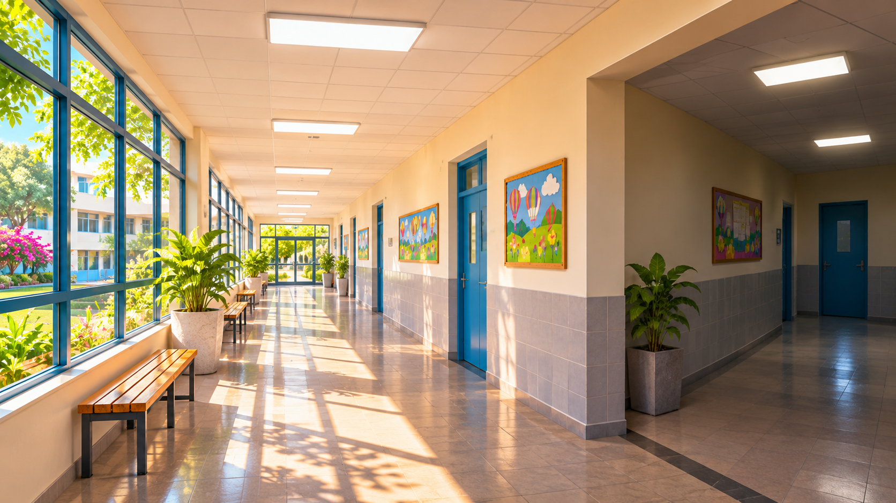

חיסכון במשאבים
תאורה חסכונית
הכול מואר. אז למה כאן עדיין חשוך?

המסדרון החדש
"איך יכול להיות שכל האורות דולקים, אבל כאן עדיין חשוך?" תהה איתן ליד הפנייה למסדרון הצדדי. איתן בן העשר לומד בבית ספר שבו שופץ לאחרונה מסדרון ארוך. לאורך התקרה הותקנו גופי תאורה ובכמה מקומות יש חלונות שמכניסים אור יום. המסדרון משמש למעבר בין כיתות וליציאה לחצר.
באחד הימים איתן חוזר מהספרייה ורואה שכל האורות דולקים, אף שהמסדרון כמעט ריק והשמש מאירה דרך החלונות.
אותה תאורה כל היום
בהפסקה המסדרון מלא תלמידים. בשעת שיעור הוא שקט ובשעות אחר הצהריים משתמשים בו רק אנשי צוות. איתן שואל מדוע התאורה נשארת זהה כשמספר האנשים והאור הטבעי משתנים.
המורה מסבירה שלא כל אור דולק הוא בזבוז. יש מקומות שבהם התאורה חיונית לבטיחות ולנגישות גם אם באותו רגע לא רואים אדם.
בדרכו לשיעור איתן מבחין שבאזור החלונות אפשר לקרוא בקלות שלט קטן, בעוד שבקצה המסדרון הוא מתקרב אל אותו שלט כדי להבחין באותיות. "אבל בכל מקום דולקות אותן מנורות", הוא אומר לחברו. מכאן עולה שאלה: האם אותה הפעלה של תאורה יוצרת אותה רמת אור בכל פינה?
כעבור שעה ענן גדול מסתיר את השמש וההבדל גדל. איתן רואה שהאור הטבעי אינו קבוע גם כשהשעון מתקדם כרגיל ומבין שזמן ביום הוא רמז בלבד לתנאים האמיתיים.
לא כל פינה מוארת
איתן מגלה שהקטע הסמוך לחלון מואר היטב בשעות מסוימות, אבל מאחורי הפנייה למסדרון צדדי נשאר אזור כהה גם באותו זמן. אור השמש נע במהלך היום ולעיתים מוסתר על ידי עננים.
הוא מבין שההחלטה על תאורה לא יכולה להתבסס על בדיקה במקום אחד בלבד ושלא כדאי לכבות אורות בלי להכיר את השימוש בכל חלק של המבנה.
מה מבקשת מנהלת בית הספר
המנהלת מעוניינת להימנע מצריכת חשמל מיותרת, אבל אינה מוכנה לפגוע בבטיחות התלמידים או בנוחות העובדים. היא רוצה להבין היכן נדרשת תאורה, כמה זמן משתמשים במקומות שונים ואילו שינויים קורים במשך היום.
איתן מבין שפתרון טוב חייב לענות על שתי מטרות: לאפשר אור מתאים ולצמצם שימוש שאין בו צורך.
יום חורפי משנה את התמונה
ביום מעונן איתן מגלה שהמסדרון נראה כהה יותר בשעה שבה אתמול היה מואר. הוא מבין שאי אפשר לקבוע מראש שאותה שעה תמיד דורשת אותה תאורה.
הוא גם מבחין שיש אזורים שאנשים נכנסים אליהם לפרקי זמן קצרים. העובדה שמקום ריק ברגע הבדיקה אינה אומרת שלא ייכנס אליו אדם בעוד רגע.
בהפסקת הצהריים איתן סופר כמה ילדים עוברים ליד החלונות וכמה פונים למסדרון הצדדי. אבל בדיוק אז עוברת קבוצת תלמידים בדרך לחוג וממלאת את המסדרון שהיה ריק קודם. הוא מבין שמספר האנשים משתנה מהר ושאין משמעות פשוטה להחלטה "ריק עכשיו — לא צריך אור".
המנהלת מזכירה שאזורי מעבר חייבים להישאר בטוחים ונגישים גם למי שמגיע לפתע. האתגר מתחיל להיראות שונה: לא לכבות כמה שיותר, אלא להבין מתי ואיפה אפשר לצמצם שימוש בלי לפגוע באנשים.
המידע שחסר
ידוע היכן נמצאים החלונות וגופי התאורה ומהן שעות הפעילות של בית הספר. לא ידוע כמה אור טבעי מגיע לכל קטע בשעות שונות ומתי נדרשת נוכחות של אנשים בכל אזור.
איתן שואל איזו מדידה תעזור למנהלת להחליט בלי להניח הנחות שעלולות ליצור מקום חשוך או לא נגיש.
לפני שממציאים
הכיתה מגדירה את הצורך: התאמת שימוש בתאורה למצבי האור והנוכחות, תוך שמירה על כללי הבטיחות של בית הספר. הילדים אינם נוגעים במערכת החשמל ולא מבצעים כיבויים ניסיוניים.
מה ההבדל בין "אין כרגע אנשים" לבין "לא נדרשת תאורה"? אילו אזורים חשוב לבדוק בנפרד? ואיך תדעו שמדד של חיסכון אינו מסתיר פגיעה בנוחות ובבטיחות?
רמז מעולם החלל
בתחנת החלל שודרגו גופי התאורה לדגמי LED יעילים יותר, שהצוות יכול להתאים את עוצמתם לשעה ולפעילות. המטרה אינה חושך, אלא אור מתאים תוך שימוש מושכל באנרגיה. מה צריך לדעת על אנשים, זמן ומשימה לפני שמחליטים כמה אור נדרש?
אחרי הקריאה — בדף הצוות
שוחחו בצוות וענו על סמך המידע שבכתבה. אם חסר מידע, רשמו שאלה להמשך.
- למי אתם רוצים לעזור בסיפור?
- מה הוא מנסה לעשות ומה מקשה עליו?
- מה הוא צריך להיות מסוגל לעשות?
- מה עוד תרצו לברר לפני שתפתחו רעיונות?